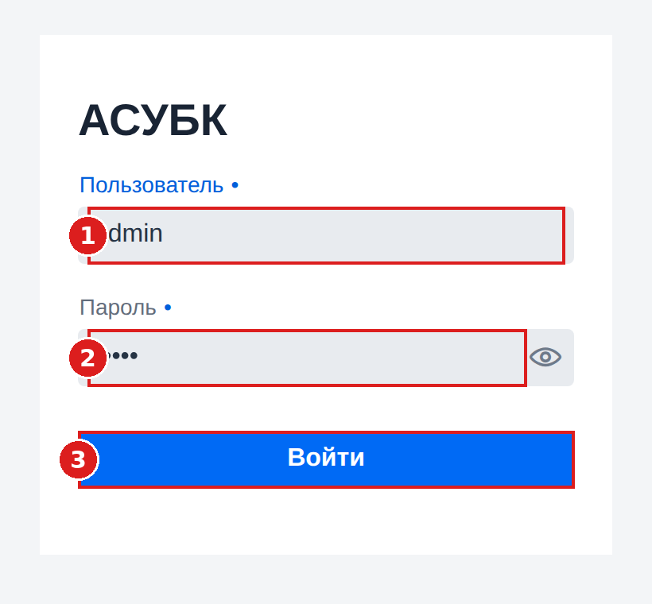
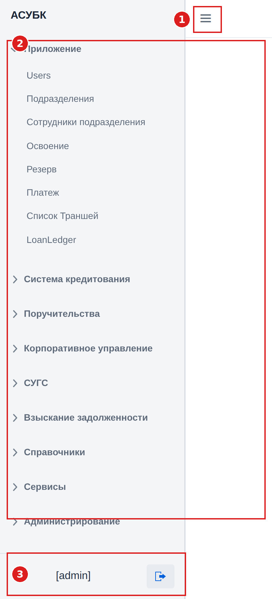
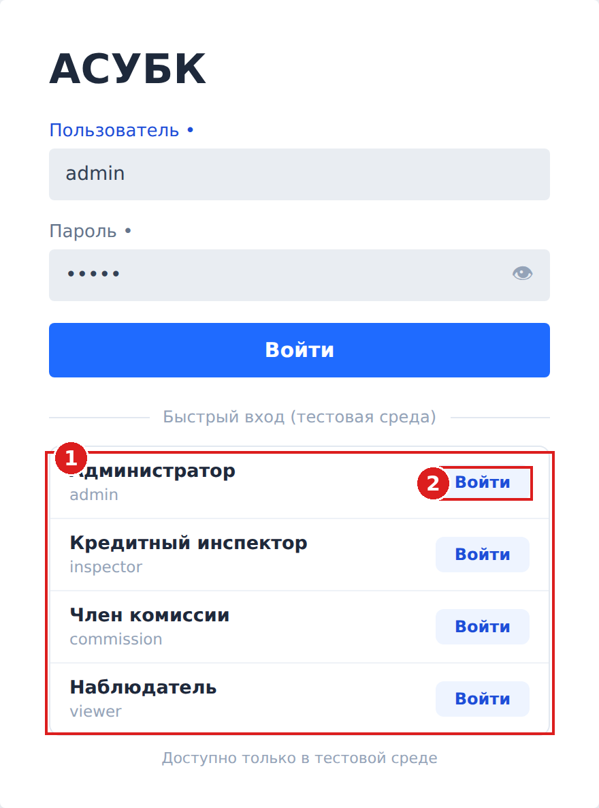

Для работы в системе откройте браузер и выполните вход по логину и паролю,
выданным администратором.
1Откройте адрес системы
В адресной строке браузера введите https://fkftest.okmot.kg/ и нажмите Enter.
Откроется форма входа.
2Заполните форму входа

1Пользователь — введите ваш логин.
2Пароль — введите пароль. Иконка «глаз» справа показывает введённый пароль.
3Войти — нажмите кнопку для входа.
3Главный экран
После успешного входа открывается главный экран системы.

1Кнопка меню (☰) — сворачивает и разворачивает
боковое меню, освобождая место для рабочей области.
2Меню разделов — навигация по модулям системы
(Система кредитования, Поручительства, Справочники и др.).
Нажмите на раздел, чтобы раскрыть его пункты.
3Текущий пользователь и выход — внизу слева показан
ваш логин. Кнопка справа от логина — выход из системы.
Выход из системы: нажмите иконку выхода рядом с именем пользователя
в левом нижнем углу.
★Быстрый вход по ролям
скоро · планируется
На странице входа появится блок «Быстрый вход» — список преднастроенных ролей. Он ускорит
вход во время тестирования: вводить логин и пароль вручную не нужно. Ниже показан планируемый вид.

1Список ролей — каждая строка соответствует роли
с её логином (Администратор, Кредитный инспектор, Член комиссии, Наблюдатель).
2Войти — нажмите напротив нужной роли; система
автоматически войдёт под этим пользователем.
Важно: функция пока недоступна — появится после реализации
командой разработки. Будет работать только в тестовой среде; в рабочей (промышленной)
системе блок скрыт.